Le adormiló el vaivén del coche poderoso y bien cuidado , una herramienta al servicio de un oficio que el chófer quería elevar a la condición de guía exaltando las gracias de Trinidad.
- - ¿ Ha ido usted a un concierto de calypsos.
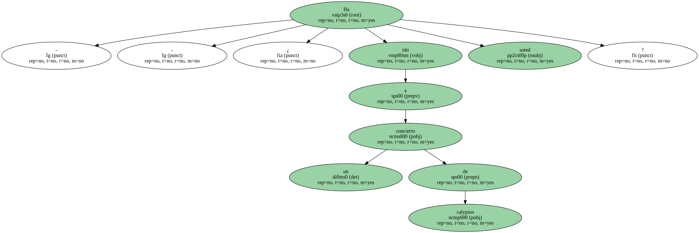He visto que sacaba el ticket para la cena de fin de año.
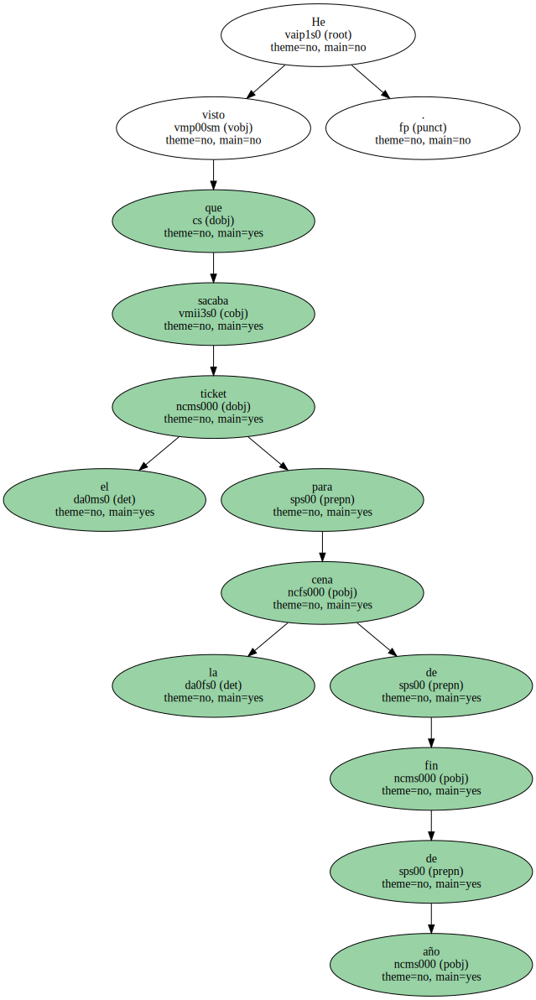La cena del Holiday Inn es casi tan elegante como la del Hilton.
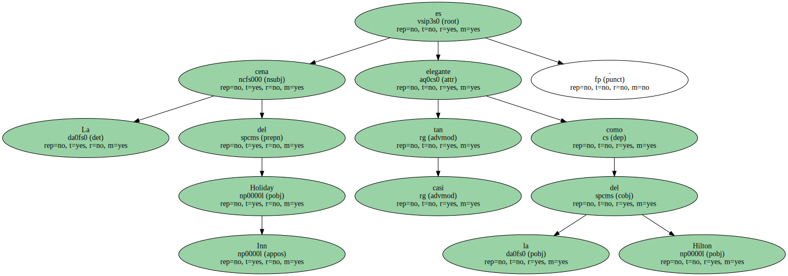Pero no se pierda el ambiente de la ciudad y los ensayos de calypsos para el Carnaval.
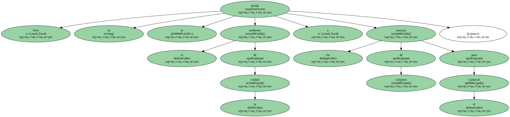Con los yanquis de la Trinidad las muchachas se han quedado turulatas.
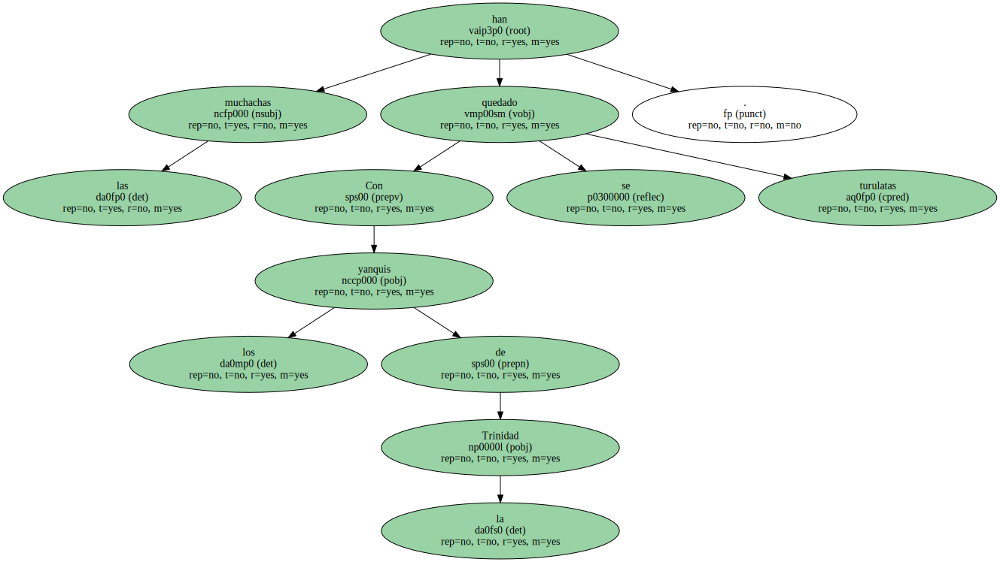Son tan amables , dicen altas , pagan también a las feas y a las guapas , beben ron y coca-cola , van a Point Cumama.
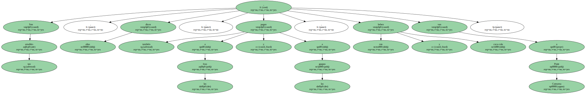Tanto la madre como la hija quieren - trabajar - por unos dólares.
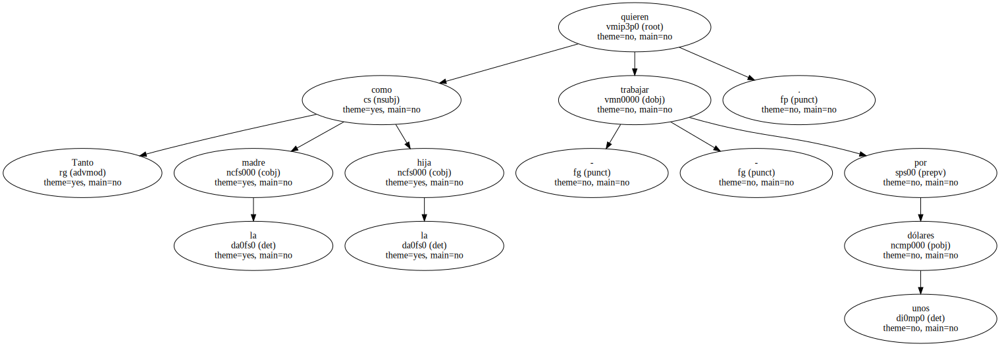Le guiñó el ojo el hindú después de canturrearle el calypso más famoso de toda la Historia del Calypso.
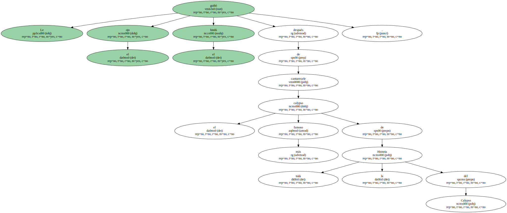- - El calypso es la canción más hermosa de todo el Caribe y es muy antiguo , más antiguo que el rock.
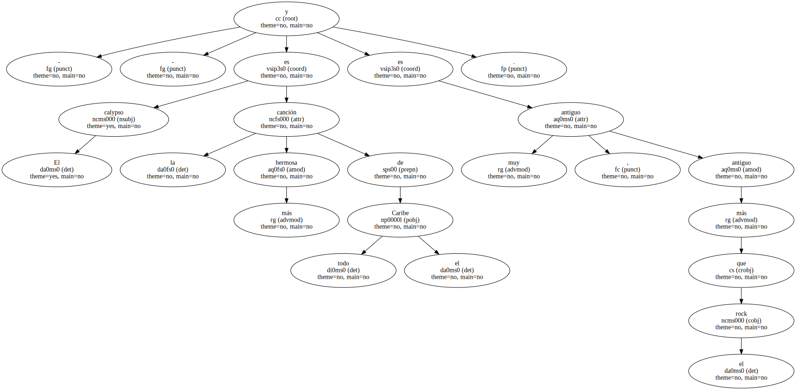Canturreaba el hindú calypsos monótonos como la continuada cerrazón del cielo.
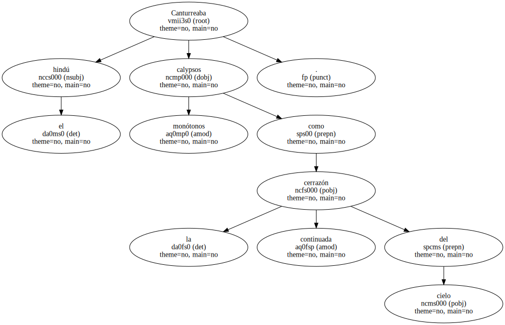- - El embalse de agua.
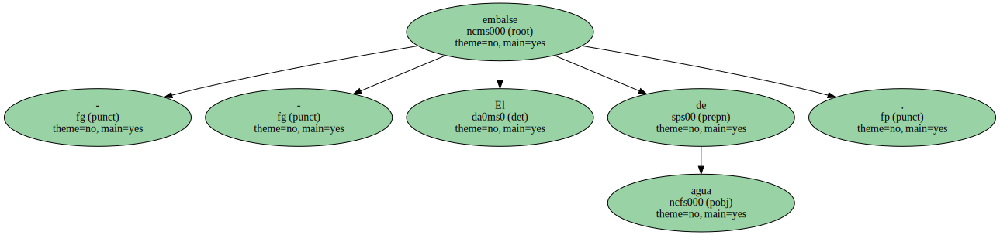Avisó el taxista , como cada mañana , como si Ginés conservara los ojos del primer día ante aquel estanque cotidianamente repetido cuando iba en busca de las migajas de sol de Maracas Bay.
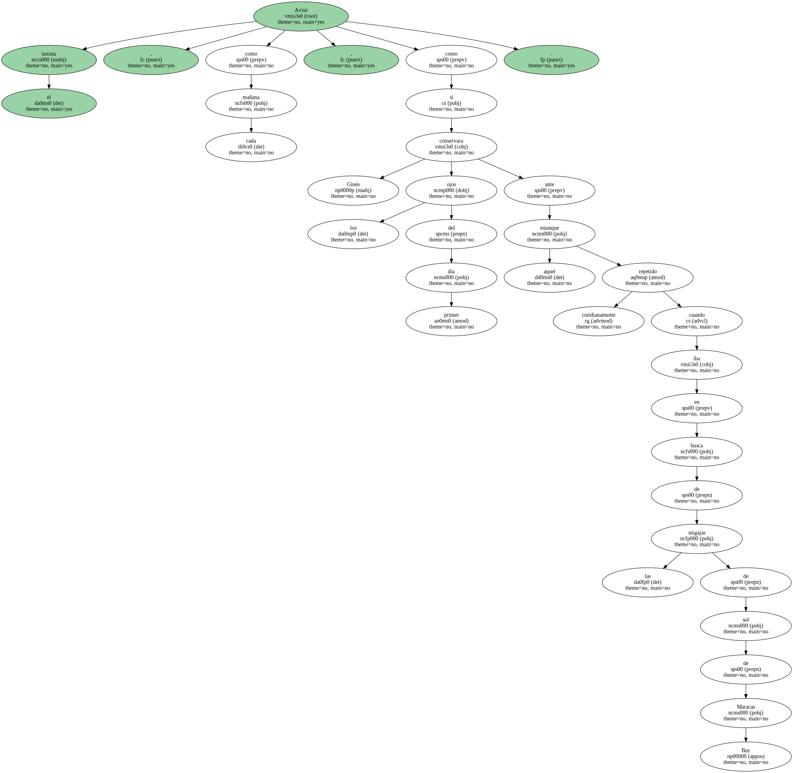El aviso de desprendimientos se convertía en realidades de arbustos vencidos sobre la carretera , piedras diríase que blandas desgajadas del alma inconsistente del suelo de la selva.
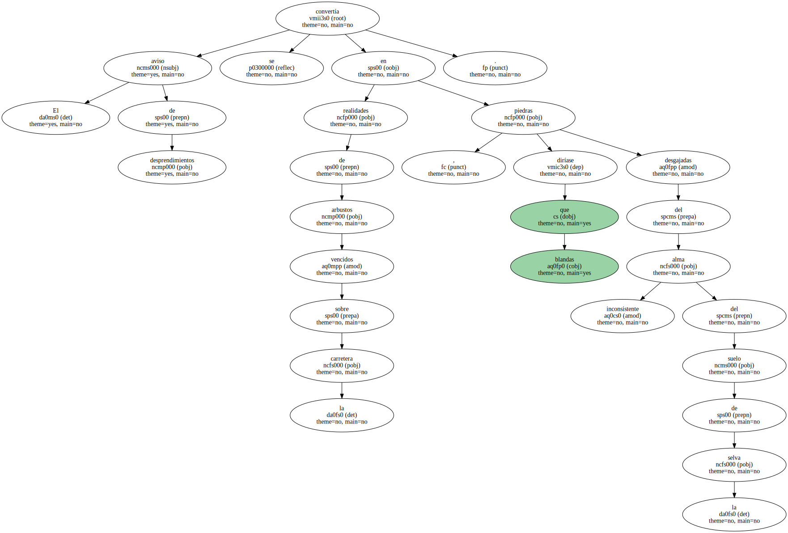De vez en cuando , Ginés se alzaba para otear el cielo por si continuaba allí la esquina despejada del noreste.
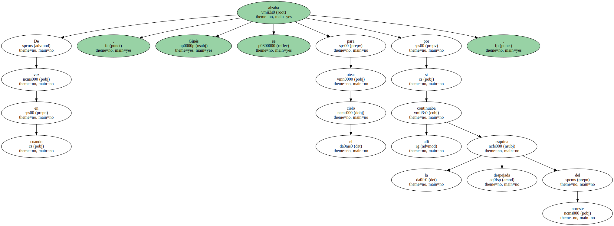El filtro gris parecía respetar aquella ventana a la luz y el calor , pero las nubes persistían inmediatas como una amenaza total , como un ejército concentrado en la frontera , a punto para invadir la única nación hermosa y libre que quedara en el mundo.

De pronto se acentuó la claridad ambiental y un rayo de sol le bañó el rostro con un calor rubio.
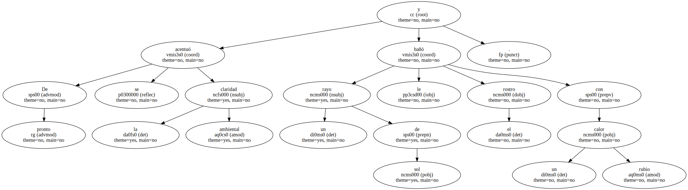